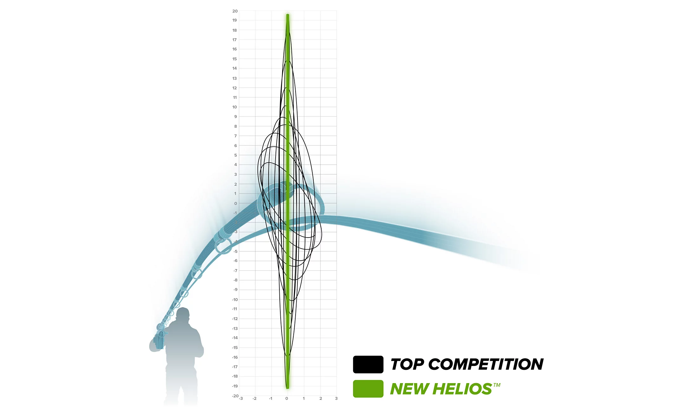
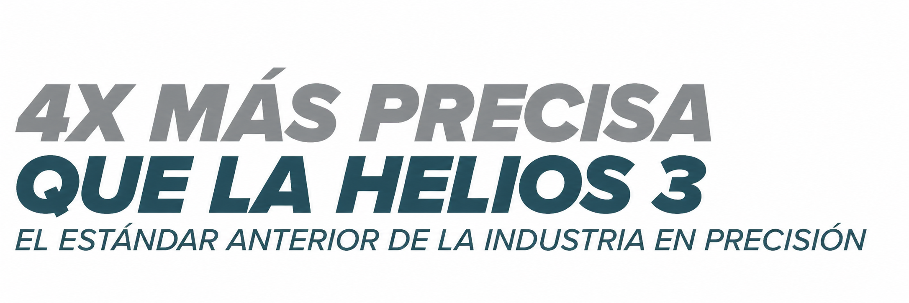
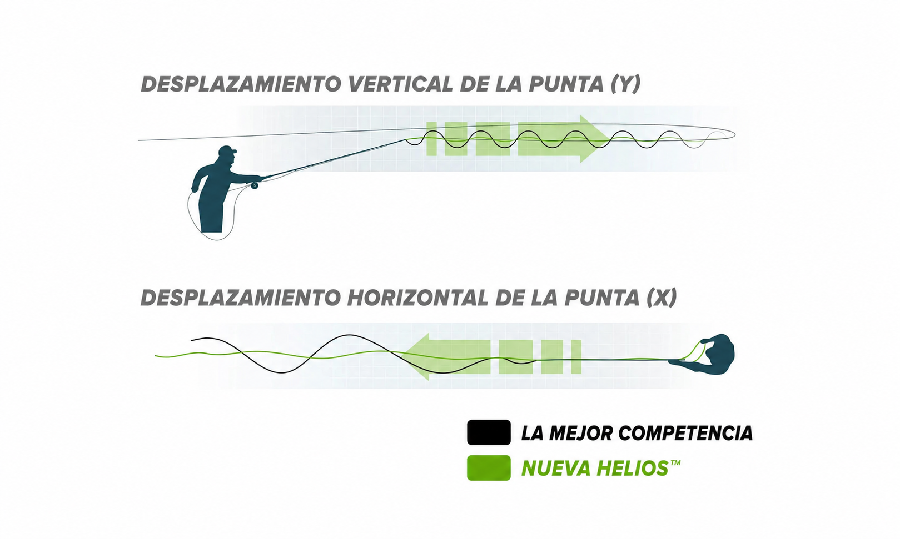
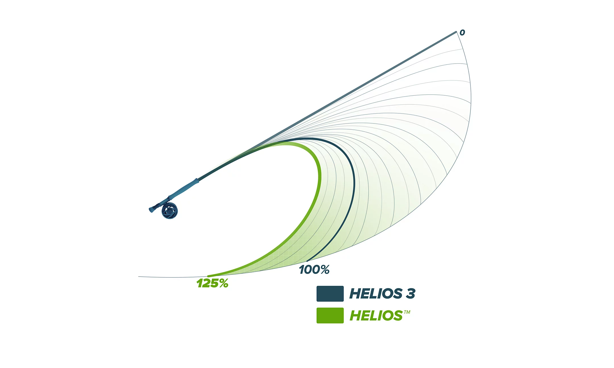
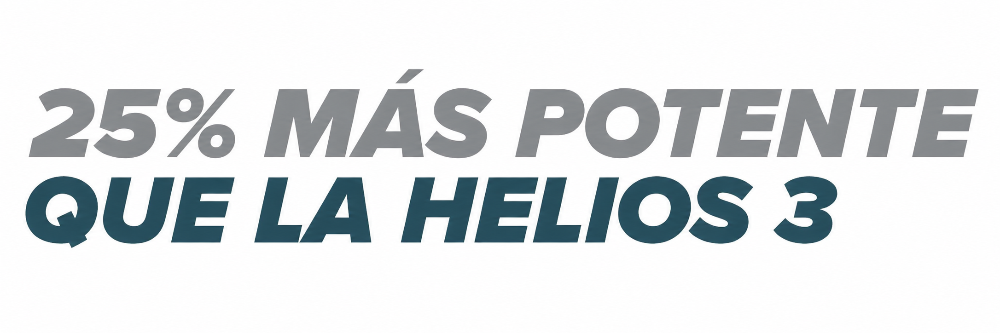
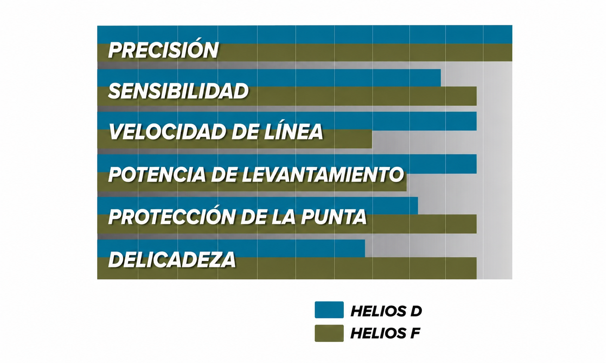

La Caña de pesca con mosca Más Precisa del Mundo.
Y podemos demostrarlo. Con la reducción más significativa en el desplazamiento de la punta jamás medida, alcanza tu objetivo con precisión láser.

Lanza tu mosca con confianza: siempre en el blanco
El refuerzo estratégico en el blank de la caña aumenta la resistencia del aro y minimiza la vibración, lo que reduce drásticamente el desplazamiento de la punta.


Músculo y temple
Una mayor distancia de recorrido significa más potencia de elevación cuando un pez pasa por debajo del barco o forcejea contra la red. Lucha esos últimos momentos con confianza.

Distancia y delicadeza: una amplia gama de opciones en dos series
Elige la serie D para mayor velocidad de línea y potencia de elevación, y la serie F para máxima sensibilidad y presentaciones delicadas con protección del tippet.
